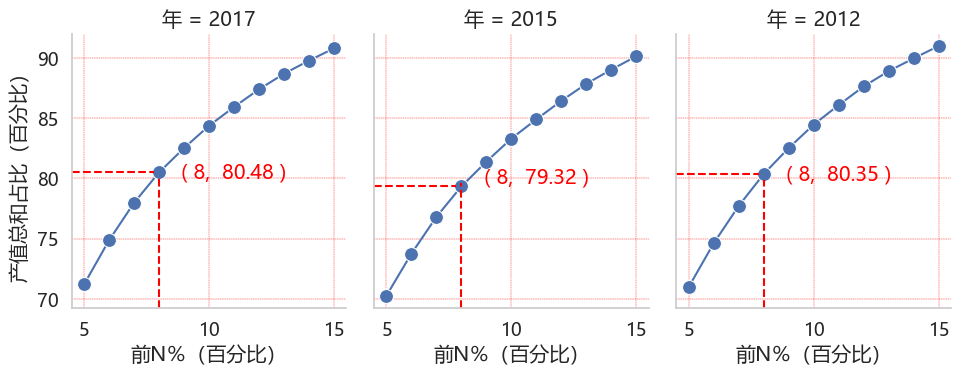

4. 🗃️CEADs 数据库#
VisCEADs 投入产出网络仪表盘 仰赖 中国碳核算数据库（CEADs），参见官方网站，特别是投入产出表。
VisCEADs 展示 数据可视化 作为 数据驱动决策 的可能性，是建立在由清华大学关大博教授团队于2016年创建 CEADs，多年来得到中国、英国研究机构的支持，所产出的碳核算数据平台。
基于科研及政策研究创新需求，本项目 VisCEADs 志谢并认可 CEADs 的贡献，并以网络数据科学及可视化，望能有效提供 精准脱碳 决策参考。
此说明文件将较为详述相关的数据清理、缩减、及转换过程（或称抽取、转换、加载，ETL）。关于进一步使用机器学习、合成数据、人工智能等计划，请见5. 🧭发展路线。
4.1. 🎓清华大学关大博教授主持CEADs 数据库信息#
清华大学关大博教授团队主持的**中国碳核算数据库(Carbon Emission Accounts & Datasets，CEADs)**[SHGH20] 编制并提供核算清单及碳核算数据。
中国中国碳核算数据库（CEADs） 定期更新多尺度能源、二氧化碳和社会经济清单，其中不只包括 世界多个新兴经济体国家的清单，亦包括省级、市级等多区域投入产出表。
投入产出数据具有分省及分社会经济部门（行业）性质，VisCEADs 首先以 涵盖31个省份和42个社会经济部门（或泛称行业或产业）的2012年、2015年、2017年使用IPCC部门排放核算方法核算的数据展开可视化工作，并着眼于提供可视化加值服务，为碳中和服务管理平台提供科学减碳方法展开精准脱碳。
此数据库对如《2024—2025年节能降碳行动方案》国家政策中的具体单位国内生产总值能源消耗和二氧化碳排放指标，提供坚实的科学基础。
4.2. 🗃️分省及分行业#
4.2.1. 分社会经济部门（行业）#
行业分类标准有联合国国际标准产业分类(ISIC)、中国国家统计局行业分类、全球行业分类系统(GICS)等。
CEADs中国分省投入出產表2017年新分类，将原科学研究和技术服务一部門拆分出科学研究及技术服务兩部門，而将原其他制造产品及废品废料合併。
4.2.2. 分省#
其它着名相关科研聚焦地区及行业排放及减排情况，绿色和平亦有30省（市）碳排放情况追踪
2024—2025中国节能降碳行动方案
《行动方案》要求围绕能源、工业、建筑、交通、公共机构、用能设备等重点领域和重点行业，部署了节能降碳十大行动。
4.2.3. 指标#
此数据库对如《2024—2025年节能降碳行动方案》国家政策中的具体单位国内生产总值能源消耗和二氧化碳排放指标，提供坚实的科学基础。
2024—2025中国节能降碳行动方案
《行动方案》要求2024年，每单位国内生产总值，二氧化碳排放降低3.9%左右，能源消耗降低2.5%。
4.3. 🗒️CEADs 数据量 与 VisCEADs 数据科学缩减及转换挑战#
CEADs 数据量在 中国省级投入产出表方面，涵盖 31个省份、3个年份和42个社会经济部门，然而由于2017年开始有了新的社会经济部门分类，所以实质的数据尺度分别为31个省份、4个年份和45个社会经济部门。而相关内涵的指标（包括检查栏位，以及本研究延伸产出的如网络计量指标）共有 30个指标。
4.3.1. 抽取及清理：数据尺度及数据量#
VisCEADs 使用Python数据科学工具将 EXCEL格式的CEADs 数据进行抽取及清理，一共获得：
167,400 节点行业部门数据，与所有尺度可能性 31*4*45*30 = 167,400 一致
218,736 行业部门投入产出关系数据，与所有尺度可能性 31*4*42*42 = 218,736 一致
另外，为深化省内各指标数据的比较研究，原始值进一步就简单统计省内的百分比排名、排名、百分比，因此所有数据含原值约展开4倍，最后数据量为：
635,013 节点行业部门数据
874,944 行业部门投入产出关系数据
4.3.2. 缩减及转换：数据量#
然而人眼对屏幕信息可视化的掌握有其上限，通常一个网络超过30个节点，或超过150个关连边缘，就会使对网络图难以识别。
有效的数据缩减及转换就有其必要，VisCEAD 在结合投入产出表本身特性，以及人机交互的可视化科学研究之后，开发出一套网络数据缩减及可视化流程，并有效地应用如Box-Cox转换，将相关的数值转换成网络的节结和边缘大小。
如下图所示，以广东为例，前8%的边缘连结值，其总和占比已达80%左右。而网络则可以缩减至约140个边缘连结 （42*42*.08）。

在考量可視化信息视觉负担，以及网络交互响应速度因素后，VisCEADs现采用各年份各省前5%的边缘数据，计88个边（42*42*.08）。
4.4. 🎯分省分行业的数据探索#
以上说明了VisCEADs 数据科学缩减及转换挑战，这为分省分行业的有效数据缩减及探索打下可视化的基础。
对于政策及产业策略方面，分省分行业的有效数据缩减也意谓着可以：
跨
省跨行业比较，产出基线（baseline）、标竿（benchmarking）等经济及能源脱碳科学数据跨
年比较、预测、以及建模，以建构可行亦能达标的脱碳速率。纳入
产业及能源网络结构的数据建模、数据合成及数据预测。
这分省和分行业的策略，更能将零碳经济（VisNetZero）和部门脱碳方法/行业脱碳法 (SDA)结合创新。
4.5. 🤖延伸：对部门脱碳方法/行业脱碳法 (SDA) 启示#
在全球脫碳需年均減19%以达《巴黎协定》1.5℃目标，各省各行业是可以推估出各行业所需的减排目标。
澳恪森致力研究零碳经济（VisNetZero）如何分地区分行业达成相关目标，而投入产出数据及其网络提供了具有科学基础及行业供应链上下游洞察的（VisCEADs）。
這些数据结合ESG及行业脱碳法 (SDA)大语言模型文本生成工具，將能利用神经网络、时间序列等特性方法，产出适时适地基于现实的脱碳建议。
4.6. 参考书目#
- SHGH20
Yuli Shan, Qi Huang, Dabo Guan, and Klaus Hubacek. China co2 emission accounts 2016–2017. Scientific Data, 7(1):54, Feb 2020. URL: https://doi.org/10.1038/s41597-020-0393-y, doi:10.1038/s41597-020-0393-y.